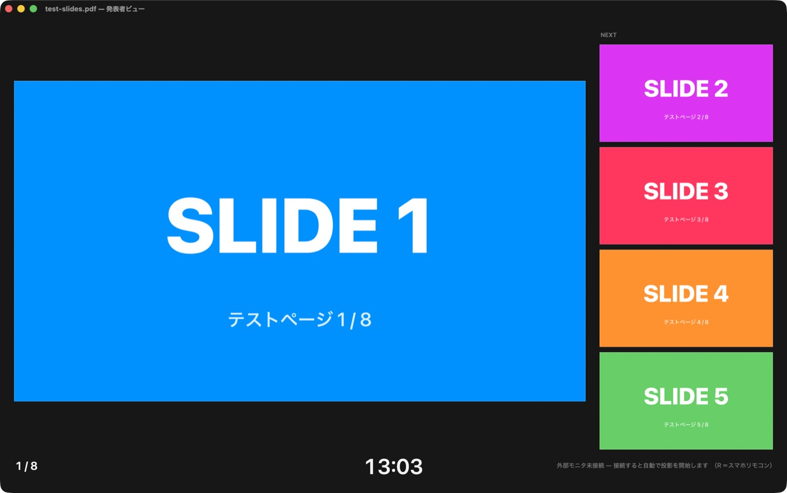
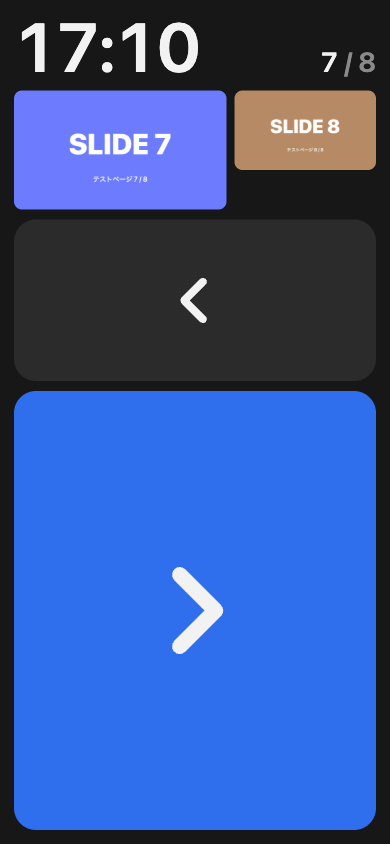
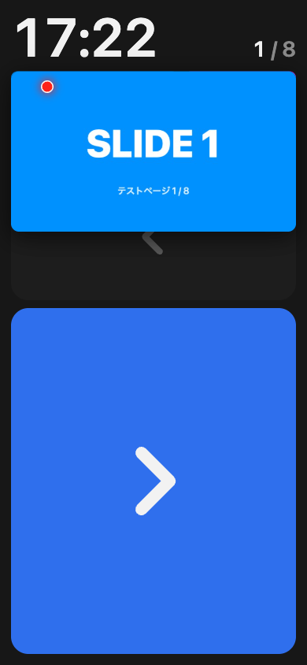

PDF Presenter
PDF の資料を、PowerPoint の発表者モードのように映すための Mac のアプリです。手元の画面に今と次のスライドと時計を、プロジェクターや外部モニタにはスライドだけを映します。
- macOS 14 以降
- M1 以降のチップの Mac で動作を確認しています。Intel の Mac でも動くように作ってありますが、実機では確かめていません。

入れる
- 受け取ったファイル（PDFPresenter-…zip）をダブルクリックします。同じ場所にフォルダができます。
- フォルダの中の を、Finder の フォルダへドラッグします。
はじめて開くとき
Apple の審査を通していないアプリなので、最初の1回だけ Mac が止めます。アプリが壊れているわけではありません。次の手順で開いてください。2回目からは普通にダブルクリックで開けます。
- フォルダの をダブルクリックします。「マルウェアが含まれていないことを確認できませんでした」という内容の画面が出るので、 を押して閉じます。 は押さないでください。
- 画面左上のりんごのマークから を開き、 を選びます。
- 下のほうに PDFPresenter について書かれた欄があるので、 を押します。欄が見当たらないときは、もう一度 1 からやり直してください。
- 確認の画面でもう一度 を押し、Mac のパスワード（または指紋）を入れます。
macOS 14 の場合は、 を右クリック（または control キーを押しながらクリック）して を選び、出てきた画面でもう一度 を押します。
画面の文言は macOS のバージョンによって少し違うことがあります。
使う
- アプリを開くと PDF を選ぶ画面が出るので、発表する PDF を選びます。PDF をアプリのアイコンにドラッグしても開けます。
- プロジェクターや外部モニタをつなぐと、そちらにスライドだけが自動で映ります。発表の途中でつないでも、外しても大丈夫です。
| →↓space・クリック | 次のスライド |
| ←↑ | 前のスライド |
| S | 手元の画面と映す画面を入れ替える |
| R | スマホで操作するための QR コードを出す・消す |
| esc | 終わる（QR コードが出ているときは、QR コードを消すだけ） |
| command + O | 別の PDF を開く |
市販のプレゼン用リモコン（ページ送りのボタン）もそのまま使えます。
スマホで操作する
スマホに何かを入れる必要はありません。スマホと Mac を同じ Wi‑Fi につないでおきます。
- Mac で R を押すと、画面に QR コードが出ます。
- スマホのカメラで QR コードを読み取り、出てきたページを開きます。QR コードは自動で消えます。
- 大きなボタンで次へ、上の小さなボタンで前へ進みます。時計と、今と次のスライドも見えます。

今のスライドを指で押さえたまま動かすと、同じ場所に赤い点が映ります。指を離すと消えます。

うまくいかないとき
スマホと Mac が同じ Wi‑Fi につながっているか確かめてください。
会場の Wi‑Fi によっては、つないでいる機器どうしの通信が止められていることがあります。そのときは、スマホのインターネット共有（テザリング）に Mac をつなぎ、Mac で R を押して QR コードを出し直してください。
Mac とつながっていません。Wi‑Fi を確かめてください。つながり直すと自動で元に戻ります。
Mac のアプリを開き直したため、前のページが使えなくなっています。Mac で R を押し、QR コードを読み取り直してください。
スマホから操作するために必要なので、 を選んでください。作者の Mac では出ていませんが、設定によっては聞かれることがあります。
個人が作ったアプリで、動作の保証はありません。本番の前に、使う Mac とプロジェクター（とスマホ）で必ず一度試してください。